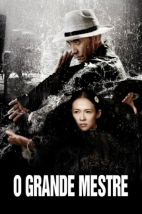

O Grande Mestre (2013)


In Martial Arts there is no right or wrong, only the last man standing.

Avaliação (TMDb):


6.4/10 (537 votos)
Avaliação (Usuário):
Outro Título:Yi dai zong shi
País:China, 130 minutos
Idiomas falados:Inglês, Português
Gênero(s):Ação, Drama, História
Diretor(s):Wong Kar-wai
Codec:MPEG-2 (DVD)
Número: 3451
Sinopse:
"The Grandmasters" é um drama épico de artes marciais, que se passa durante a tumultuada China dos anos 1930, inspirado na vida do lendário homem IP (Tony Leung Chiu Wai), mentor de Bruce Lee. A trama envolve temas como: guerra, família, vingança, desejo, memória e amor.
Elenco:
Tony Leung Chiu-Wai, Zhang Ziyi, Chang Chen, Song Hye-kyo, Zhao Benshan, Xiao Shenyang, Wang Qingxiang, Zhang Jin, Shang Tielong, Yuen Woo-ping
Tipo de mídia: DVD5,
Legendas: Português
Alugado: Não
Tela: 2.35:1